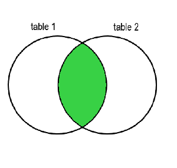
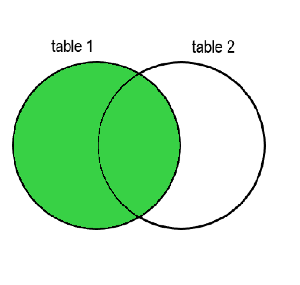
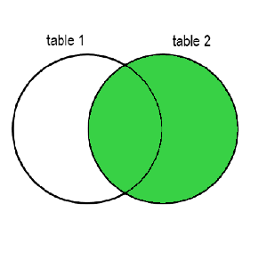
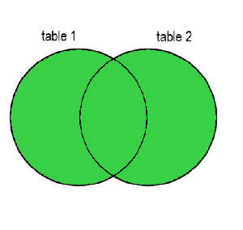

Este referencial de SQL foi criado para fornecer uma visão geral sobre os comandos e técnicas mais comuns utilizados no MySQL 7, um dos Sistemas de Gestão de Base de Dados (SGBD) mais populares e amplamente usados. Cada secção deste guia aborda diferentes aspectos do MySQL 7, desde a criação e manipulação de dados até conceitos avançados como índices, vistas e junções. Seja você um iniciante em SQL ou alguém à procura de aperfeiçoar os seus conhecimentos, este referencial serve como um recurso valioso para compreender e aplicar eficazmente os comandos SQL no contexto do MySQL 7.
O MySQL oferece uma variedade de tipos de dados para atender a diferentes necessidades de armazenamento de dados, incluindo tipos numéricos, de data e hora, string e espaciais. Escolher o tipo de dado correto para uma coluna é crucial para otimizar o desempenho do banco de dados.
Utilizados para armazenar dados geográficos e espaciais, como pontos, linhas e polígonos, facilitando consultas baseadas em localização.
Escolher o tipo de dado apropriado não apenas afeta o desempenho do banco de dados, mas também como as consultas são realizadas e otimizadas. Portanto, é importante considerar o tipo de informação que cada coluna armazenará antes de definir seu tipo de dado.
Índices são usados para acelerar a pesquisa de dados em uma tabela. Eles são particularmente úteis em tabelas grandes.
CREATE INDEX idx_nome ON Clientes (Nome);
Este comando cria um índice chamado 'idx_nome' na coluna 'Nome' da tabela 'Clientes' para melhorar a eficiência das consultas.
Views são consultas armazenadas que você pode usar como se fossem tabelas. Elas são úteis para simplificar consultas complexas e garantir segurança de dados.
CREATE VIEW v_InfoClientes AS SELECT Nome, Email FROM Clientes;
Este comando cria uma view chamada 'v_InfoClientes' que mostra as colunas 'Nome' e 'Email' da tabela 'Clientes'.
Usado para adicionar, deletar, ou modificar colunas em uma tabela existente.
ALTER TABLE tabela ADD nova_coluna tipo_dado;
Este comando adiciona uma nova coluna à tabela especificada.
Índices são usados para acelerar a pesquisa de dados em uma tabela. Eles são particularmente úteis em tabelas grandes.
CREATE INDEX idx_nome ON Clientes (Nome);
Este comando cria um índice chamado 'idx_nome' na coluna 'Nome' da tabela 'Clientes'.
Cria uma nova tabela no banco de dados.
CREATE TABLE tabela (coluna1 tipo_dado1, coluna2 tipo_dado2, ...);
Este comando cria uma nova tabela com as colunas especificadas.
Views são consultas armazenadas que você pode usar como se fossem tabelas. Elas são úteis para simplificar consultas complexas e garantir segurança de dados.
CREATE VIEW v_InfoClientes AS SELECT Nome, Email FROM Clientes;
Este comando cria uma view chamada 'v_InfoClientes' que mostra as colunas 'Nome' e 'Email' da tabela 'Clientes'.
Remove dados de uma tabela.
DELETE FROM tabela WHERE condição;
Este comando remove dados da tabela que atendem à condição especificada.
Agrupa linhas que têm os mesmos valores em colunas especificadas.
SELECT coluna, COUNT(*) FROM tabela GROUP BY coluna;
Este comando agrupa as linhas da tabela pela coluna especificada e conta o número de linhas em cada grupo.
Usado para filtrar os resultados do grupo criado pelo comando GROUP BY.
SELECT coluna, COUNT(*) FROM tabela GROUP BY coluna HAVING COUNT(*) > 5;
Este comando filtra os grupos criados, mostrando apenas aqueles com mais de 5 registros.
Insere novos dados em uma tabela.
INSERT INTO tabela (coluna1, coluna2) VALUES (valor1, valor2);
Este comando insere novos valores nas colunas especificadas da tabela.
Usado para combinar linhas de duas ou mais tabelas, com base em uma coluna relacionada entre elas.
SELECT colunas FROM tabela1 JOIN tabela2 ON tabela1.coluna_comum = tabela2.coluna_comum;
Este comando mostra como combinar duas tabelas onde há valores correspondentes em uma coluna comum.
Usado para selecionar dados de uma base de dados.
SELECT * FROM tabela;
Este comando seleciona todos os dados da tabela especificada.
Usado para buscar dados que correspondam a um padrão especificado. É frequentemente utilizado em conjunto com wildcards (%) para filtrar resultados baseados em padrões de correspondência parcial.
SELECT * FROM tabela WHERE coluna LIKE '%padrao%';
Este comando busca por todos os registros na coluna especificada que contêm a palavra 'padrao' em qualquer posição.
Permite especificar múltiplos valores em uma cláusula WHERE, facilitando a busca por registros que correspondam a qualquer um dos valores listados.
SELECT * FROM tabela WHERE coluna IN (valor1, valor2, valor3);
Este comando seleciona registros onde a coluna tem um dos valores especificados.
Usado para selecionar valores dentro de um intervalo definido, inclusive os valores inicial e final especificados.
SELECT * FROM tabela WHERE coluna BETWEEN valor_inicial AND valor_final;
Este comando seleciona todos os registros onde a coluna tem um valor entre 'valor_inicial' e 'valor_final'.
Caracteres especiais usados com o comando LIKE para realizar buscas flexíveis em strings. Os mais comuns são o percentual (%) para qualquer sequência de caracteres e o sublinhado (_) para um único caractere.
SELECT * FROM tabela WHERE coluna LIKE 'texto%';
Busca registros onde a coluna começa com 'texto' e é seguida por qualquer sequência de caracteres.
SELECT * FROM tabela WHERE coluna LIKE 'texto_';
Busca registros onde a coluna começa com 'texto' e é seguido por exatamente um caractere adicional.
Atualiza dados existentes em uma tabela.
UPDATE tabela SET coluna1 = valor1 WHERE condição;
Este comando atualiza os valores na coluna especificada, baseado na condição fornecida.
Usado para modificar um banco de dados existente.
ALTER DATABASE nome_database MODIFY NAME = novo_nome_database;
Este comando modifica o nome do banco de dados especificado.
Cria um novo banco de dados.
CREATE DATABASE nome_database;
Este comando cria um novo banco de dados com o nome especificado.
Remove uma tabela do banco de dados.
DROP TABLE nome_tabela;
Este comando remove a tabela especificada e todos os seus dados do banco de dados.
Remove todos os registros de uma tabela sem deletar a tabela em si.
TRUNCATE TABLE nome_tabela;
Este comando remove rapidamente todos os dados de uma tabela, mantendo sua estrutura para uso futuro.
Finaliza uma transação, salvando todas as mudanças feitas.
COMMIT;
Este comando salva todas as modificações realizadas durante a transação atual.
Desfaz todas as mudanças feitas na transação atual.
ROLLBACK;
Este comando desfaz todas as modificações realizadas, revertendo o banco de dados ao estado anterior ao início da transação.
Cria um ponto no qual você pode fazer um ROLLBACK mais tarde.
SAVEPOINT nome_savepoint;
Este comando cria um ponto de salvamento dentro de uma transação, permitindo o ROLLBACK para esse ponto específico sem desfazer toda a transação.
Bloqueia a tabela especificada para evitar que outros usuários a modifiquem.
LOCK TABLE nome_tabela IN EXCLUSIVE MODE;
Este comando bloqueia a tabela, permitindo apenas que o usuário atual faça modificações.
JOINs são usados para combinar linhas de duas ou mais tabelas, baseadas em uma coluna relacionada entre elas. Existem vários tipos de JOINS, cada um com um propósito específico.
Combina linhas de duas tabelas quando há uma correspondência nas colunas especificadas.
SELECT * FROM tabela1 INNER JOIN tabela2 ON tabela1.coluna_comum = tabela2.coluna_comum;
Inclui todas as linhas da tabela à esquerda e as linhas correspondentes da tabela à direita.
SELECT * FROM tabela1 LEFT JOIN tabela2 ON tabela1.coluna_comum = tabela2.coluna_comum;
Inclui todas as linhas da tabela à direita e as linhas correspondentes da tabela à esquerda.
SELECT * FROM tabela1 RIGHT JOIN tabela2 ON tabela1.coluna_comum = tabela2.coluna_comum;
Combina todas as linhas de ambas as tabelas, independentemente de haver uma correspondência.
SELECT * FROM tabela1 FULL JOIN tabela2 ON tabela1.coluna_comum = tabela2.coluna_comum;